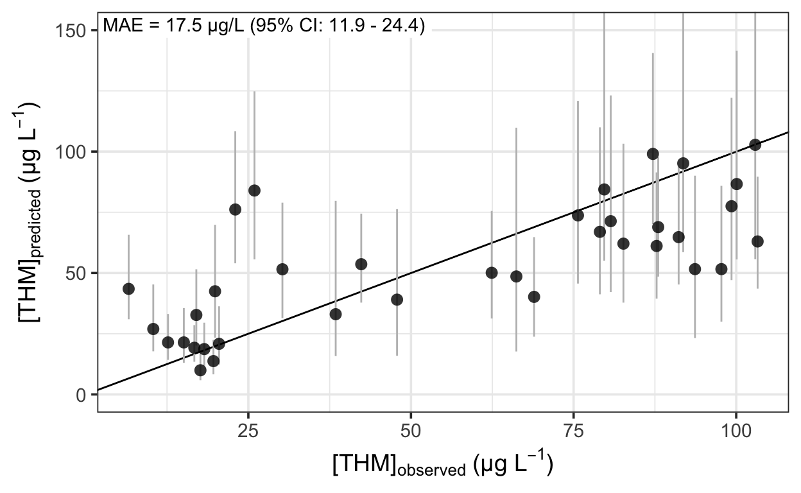
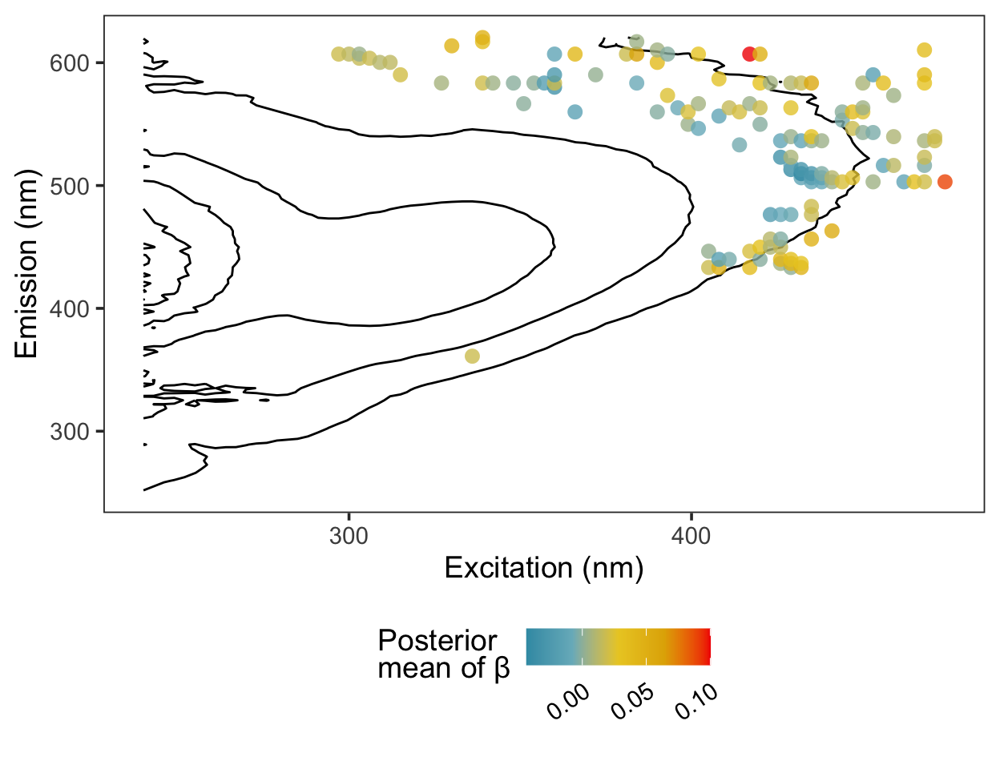

Using heirarchical shrinkage priors on linear regression coefficients to reduce the variance of ccorrelated predictors.
I’ve recently been experimenting with regularizing priors in Bayesian linear regression models, and I thought a good opportunity to explore them was to revisit an older paper of mine featuring a \(p>N\) problem (Trueman et al. 2016). The paper described predicting the byproducts of chlorine disinfection in drinking water using fluorescence over a range of excitation wavelengths.
One of the benefits of a Bayesian approach here, I think, is that any prediction performance metric can be calculated or each posterior draw—meaning that it too has a distribution. I think this really helps add some perspective to comparisons among models that point estimates of predictive error lack.
For this post, I used linear regression with a Gamma likelihood to keep predictions positive and a heirarchical shrinkage prior on the regression coefficients (Piironen and Vehtari 2017) to help stabilize the estimates of correlated predictors. The \(n\) trihalomethane concentrations, \(y_n\), are predicted using the following model, and fitted with brms.
\[ y_n \sim Gamma(\mu, \alpha)~\text{[likelihood]} \\ log(\mu) = \gamma + X \beta~\text{[model for }\mu] \\ \text{priors:} \\ \gamma \sim T(4.1,2.5,3)~\text{[intercept]} \\ \alpha \sim Gamma(0.01, 0.01)~\text{[shape parameter]} \\ \beta_j \sim N(0, \tau^2\widetilde{\lambda}_j^2)~\text{[regression coefficients]} \\ \widetilde{\lambda}_j^2 = \frac{c^2 \lambda_j^2}{c^2 + \tau^2\lambda_j^2} \\ \lambda_j \sim T(0, 1, 3),~j=1,...,D \\ c^2 \sim \text{Inv-Gamma}(\nu/2, \nu s^2/2) \\ \tau \sim C^+(0,1) \\ \nu = 4 \\ s^2 = 4 \\ \] where \(T\), \(C^+\), \(Gamma\), and \(N\) are the student-t, half-Cauchy, gamma, and normal distributions. The parameters \(\mu\) and \(\alpha\) represent the mean and shape of the gamma distribution, while \(\gamma\) and \(\beta\) represent the intercept and the regression coefficients; \(X\) is an \(n \times D\) matrix of \(D\) scaled predictors.
The horseshoe prior on the regression coefficients is a little more difficult to understand. The basic intuition is that the global shrinkage parameter, \(\tau\), pulls all of the regression coefficients towards zero, while the local shrinkage parameters, \(\widetilde{\lambda}_j\), allow some coefficients to escape the shrinkage with their fat-tailed prior. The \(\widetilde{\lambda}_j\) are a function of \(\tau\), \(\lambda_j\), and \(c^2\), each of which have their own prior distributions. For regression coefficients with large absolute values, the prior approaches \(N(0,c^2)\) while for the smallest coefficients, the prior approaches \(N(0,\tau^2\lambda_j^2)\) (Piironen and Vehtari 2017).
To fit the model, we’ll need the following packages:
First, read the data using data.table::fread, which will be faster than readr::read_csv.
Then, we’ll need functions to prepare the data and fit the model. The first one separates the training and test data, ranks the predictors in the training data by correlation with the response, chooses the \(D\) predictors with the highest correlation, fits the model, and generates the test predictions.
dbp_model <- function(data, folds, this_fold, n, filename, ...) {
# generate train/test indices:
test_rows <- folds == this_fold
train_rows <- folds != this_fold
# prepare training data:
data_train <- data[train_rows, ]
# select the n variables in the training data having the largest
# correlation with the response:
corvars_train <- apply(
data_train, 2,
\(x) suppressWarnings(cor(data_train[,"thm_ppb"], x))
)
these_vars <- names(sort(abs(corvars_train), decreasing = TRUE)[seq_len(n + 1)])
data_train_sub <- select(data_train, all_of(these_vars)) %>%
scale()
# prepare test data:
data_test <- data[test_rows, ] %>%
select(all_of(these_vars), -thm_ppb) %>%
scale_testdata(data_train_sub)
# rescale training response:
data_train_sub[,"thm_ppb"] <- data_train$thm_ppb
# train model:
model_train <- fit_dbp_model(data_train_sub, this_fold, filename, ...)
# test model:
preds_test <- posterior_epred(
model_train, newdata = data_test
)
list(
model_train = model_train,
preds_test = preds_test,
thm_ppb = data$thm_ppb[test_rows]
)
}We’ll need two helper functions as well: one as a wrapper around brms::brm…
… and one to scale the test data using the column means and standard deviations from the training data.
Before using these functions, some minor cleaning of the data is necessary:
thmfp <- plant %>%
filter(!is.na(thm_ppb)) %>%
mutate(formation = if_else(formation == "T", 1, 0)) %>%
select(-haa_ppb) %>%
rename_with(.fn = ~ str_replace(.x, "^(\\d)", "f\\1"), .cols = everything())Then, determine random fold assignment as follows. For each of the \(k=10\) folds, we fit the data on the \(k-1\) training folds and make test predictions using the \(k^{th}\) fold.
This yields a minimum training set for each iteration of 30 observations. Now we can run the model; I’m using \(D=38\) predictors, making this a \(p>n\) problem without generating an overly large model.
We can assess prediction performance using the median absolute prediction error…
… and plot the predictions against the observations to assess the fit.

Here are the regression coefficients mapped onto a contour plot representing the average fluorescence intensity at each excitation/emission pair. The coordinates most correlated with the response tend to cluster at the boundaries of the region characteristic of humic acid fluorescence.

The out-of-sample prediction error had a 95% credible interval of 11.9–24.4 \(\mu\)g L-1. This is probably too high to be useful in practice, but more data would likely help—the 38 observations used here don’t make for a large training set.